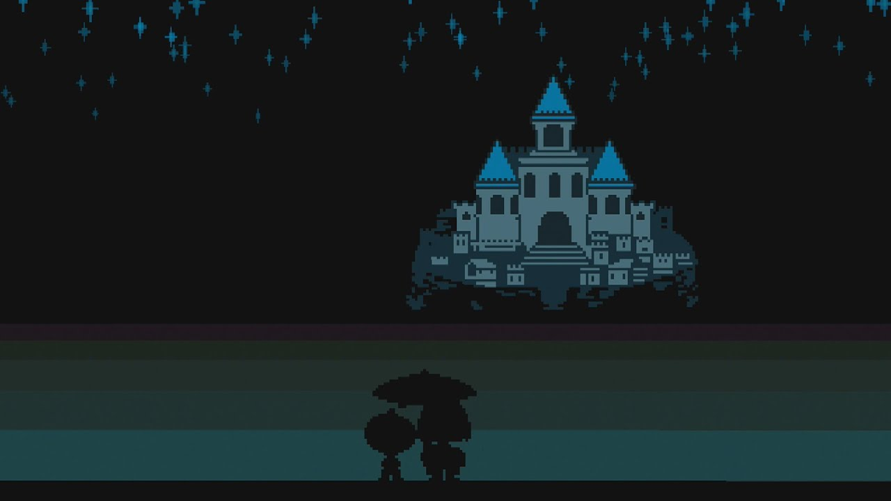
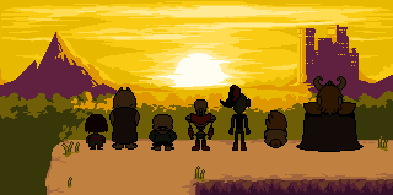
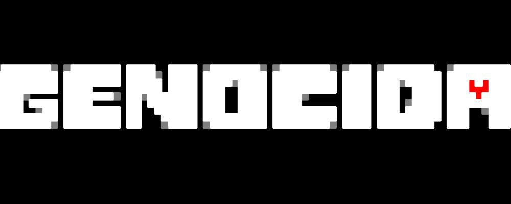
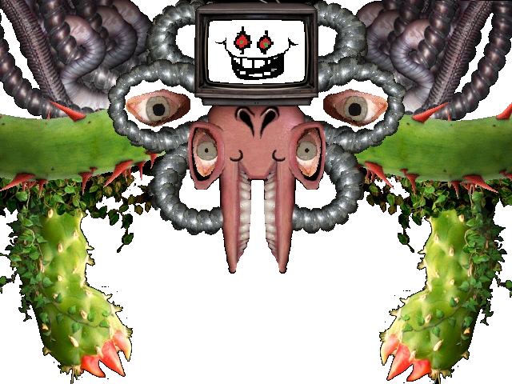

Voltar para a página inicial
Rotas Dísponiveis;
A Rota Neutra acontece quando o jogador faz uma combinação de escolhas, poupando
alguns inimigos e matando outros, sem seguir totalmente o
caminho da paz (Pacifista) ou da destruição (Genocida).
Nela, você enfrenta ASGORE, e logo em seguida luta contra Flowey.
O final muda de acordo com quem você matou ou poupou durante a gameplay.
É a primeira rota que a maioria dos jogadores faz, pois não exige nenhuma condição específica
além de seguir o jogo naturalmente. Dependendo das suas ações, personagens como
Toriel, Papyrus, Undyne e Mettaton podem viver ou morrer.
Após o final, Flowey sugere que você “faça amizade com todos”, incentivando o jogador a tentar a Rota
Pacifista Verdadeira.

A Rota Pacifista acontece quando o jogador passa por todo o jogo
sem matar nenhum inimigo, resolvendo os combates com ações e poupando todos.
Para acessar a Pacifista Verdadeira, é preciso também fazer amizade com personagens
principais como Papyrus, Undyne e Alphys, além de explorar o laboratório secreto de Alphys.
Nessa rota, você enfrenta um novo chefe final, descobre toda a verdade sobre o
mundo e consegue libertar os monstros do subsolo.
É o final mais feliz e completo do jogo, onde todos sobrevivem e você alcança a verdadeira paz.


A Rota Genocida acontece quando o jogador mata todos os inimigos de
todas as áreas, incluindo os personagens principais, sem poupar ninguém. Para seguir
essa rota, é preciso andar por cada zona até que não apareçam mais encontros aleatórios, e o
jogo diga que "NÂO RESTA NINGUÉM". Os chefes e personagens, como Toriel,
Papyrus, Undyne e Sans, são mortos em lutas difíceis e emocionalmente profundas.
Nessa rota, o protagonista se torna uma ameaça cruel, e até mesmo Flowey teme suas ações.
O final é sombrio, destrutivo e deixa marcas permanentes no arquivo do jogo, afetando futuras jogadas,
mesmo se você tentar jogar na rota pacifista depois. É considerado o final mais triste e
impactante de Undertale.

Você se enche de DETERMINAÇÃO.